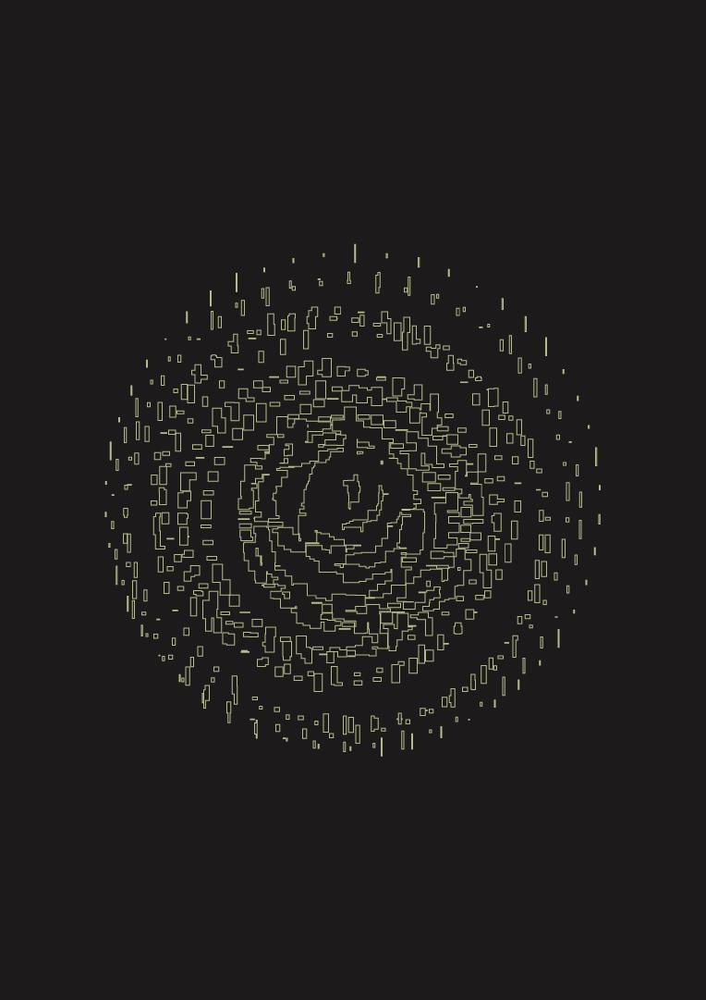
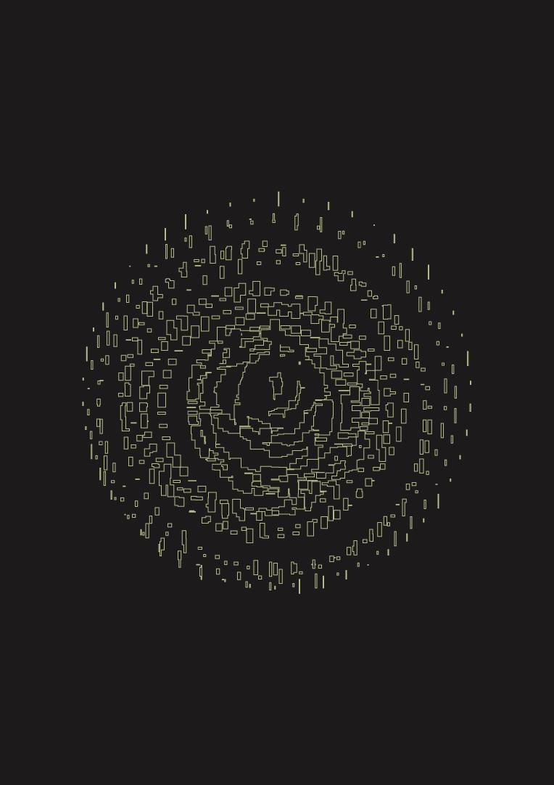

IMI
IMI it's a design lab of disorganization models. In another words, they trow away, move and rethink structures insides companys to develop a unique culture based on the people who are the company.
The concept to develop the identity relates the culture mediums cultivated inside science labs to study micro-organisms with the experiments IMI conducts inside organizations to develop culture for and with people. We developed a code in Nodebox3 to create digital culture mediums and use that as part of the identity. The colors are inspired by the nature - leafs, bambu and the fungi world - and also by the imperfect colors of the oriental ceramic.
Made at REBU
Client: IMI
Year: 2020
Creative Direction: Pedro Mattos, Fernando Andreazi
Graphic Design: Bruno Faiotto, Camilla Mattos
Code: Bruno Faiotto
Fonts: Supply Mono, Neue Haas Grotesk


 
